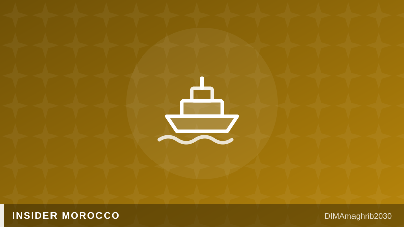

Marhaba 2026 : mon guide sans filtre pour traverser le détroit sans y laisser ses nerfsMarhaba 2026: My Unfiltered Guide to Crossing the Strait Without Losing Your Mind

Chaque été, c'est le même rituel. Des millions d'entre nous — les Marocains du monde — reprennent la route du pays. L'Opération Marhaba 2026 a mobilisé un dispositif sans précédent entre le Maroc et l'Espagne pour accueillir jusqu'à 3,5 millions de MRE, rapporte Le7TV. Rien que du 15 juin au 15 juillet, Yabiladi comptabilise 646 121 passagers et plus de 160 000 véhicules ayant traversé le détroit. Moi, je fais cette traversée depuis vingt ans, avec les enfants qui dorment à l'arrière et le coffre plein à craquer. Voici ce que j'aurais aimé qu'on me dise plus tôt.
Choisir sa ligne, c'est la moitié du voyage
La ligne Algésiras–Tanger Med est l'autoroute de la mer : plus de 250 000 passagers en un mois, des départs fréquents, des billets flexibles. C'est la plus fiable quand tout va bien — et la plus embouteillée les jours noirs. Mon astuce de toujours : si vous voyagez léger et sans véhicule chargé comme un déménagement, regardez Tarifa–Tanger Ville. La traversée est plus courte, et vous débarquez en plein centre de Tanger, pas à 45 minutes de route. Par contre, évitez d'acheter vos billets aux rabatteurs qui rôdent sur la route d'Algésiras : passez par les compagnies ou les guichets officiels, sinon vous risquez le billet « open » hors de prix ou invalide.
Les jours à éviter absolument
Le pic aller se joue fin juillet, le pic retour autour du 15-20 août : ces week-ends-là, même les 2 220 rotations du premier mois ne suffisent pas. Réservez votre retour en même temps que votre aller — c'est la seule règle non négociable. Partez tôt le matin, un mardi ou un mercredi si vous pouvez, mangez avant d'embarquer, et gardez de l'eau, des espèces en petites coupures et vos papiers à portée de main, pas au fond du coffre.
Le vrai visage de Marhaba
On râle sur les files d'attente, mais soyons honnêtes : le dispositif s'est professionnalisé. Rien que le premier mois, les services de l'opération ont assuré 386 interventions médicales et près de 3 000 assistances sociales dans les ports, selon Yabiladi. Les aires de repos de la Fondation Mohammed V, les volontaires, la coordination avec les ports espagnols : tout cela existe et fonctionne. Mon dernier conseil d'initié : à l'arrivée à Tanger Med, ne changez pas tout votre argent au premier guichet venu et ne surchargez pas le toit de la voiture — les contrôles sont réels. Bonne traversée, et marhaba bikoum à la maison.
Every summer, the same ritual. Millions of us — Moroccans living abroad — hit the road home. Operation Marhaba 2026 has deployed an unprecedented arrangement between Morocco and Spain to welcome up to 3.5 million members of the diaspora, Le7TV reports. Between June 15 and July 15 alone, Yabiladi counts 646,121 passengers and more than 160,000 vehicles crossing the Strait. Me? I've been making this crossing for twenty years, kids asleep in the back, boot packed to bursting. Here is what I wish someone had told me sooner.
Choosing your route is half the journey
The Algeciras–Tanger Med line is the motorway of the sea: over 250,000 passengers in a single month, frequent departures, flexible tickets. It is the most reliable option on a good day — and the most congested on the bad ones. My long-standing tip: if you are travelling light, without a car loaded like a house move, look at Tarifa–Tangier Ville. The crossing is shorter and you disembark right in central Tangier, not 45 minutes away. One warning: do not buy tickets from the touts lurking along the road to Algeciras — go through the ferry companies or official counters, or you risk an overpriced or invalid "open" ticket.
The days to avoid at all costs
The outbound peak hits in late July, the return peak around August 15-20: on those weekends, even the 2,220 ferry rotations of the first month are not enough. Book your return at the same time as your outbound trip — that is the one non-negotiable rule. Leave early in the morning, on a Tuesday or Wednesday if you can, eat before boarding, and keep water, small banknotes and your documents within reach, not buried in the boot.
The real face of Marhaba
We all complain about the queues, but let's be honest: the operation has become seriously professional. In the first month alone, Marhaba services carried out 386 medical interventions and nearly 3,000 social assistance actions in the ports, according to Yabiladi. The Mohammed V Foundation rest areas, the volunteers, the coordination with Spanish ports — it all exists and it works. One last insider tip: when you land at Tanger Med, don't change all your money at the first exchange booth you see, and don't overload your roof rack — the checks are real. Safe crossing, and marhaba bikoum — welcome home.